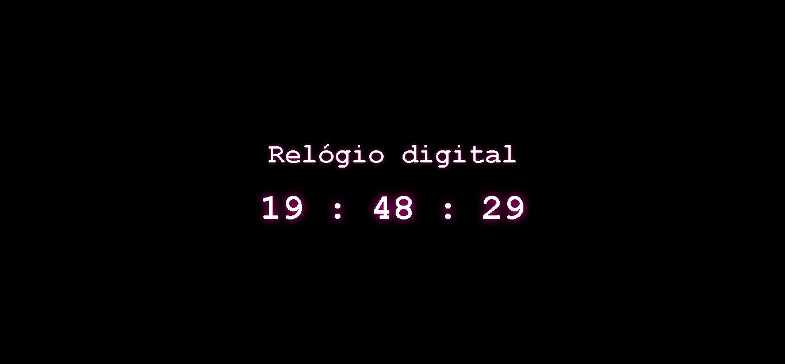

Relógio
Sobre o Projeto
Este projeto foi criado utilizando Javascript HTML e CSS.
A proposta é um relógio digital que exibe a hora atual em tempo real com atualização automática a cada segundo.
Imagem do Projeto

Tecnologias Utilizadas
- HTML5
- CSS3
- Javascript
- Git e GitHub
Conceitos praticados
- Objetos, propriedades e funções do js
- Operadorações e lógica
- HTML semântico